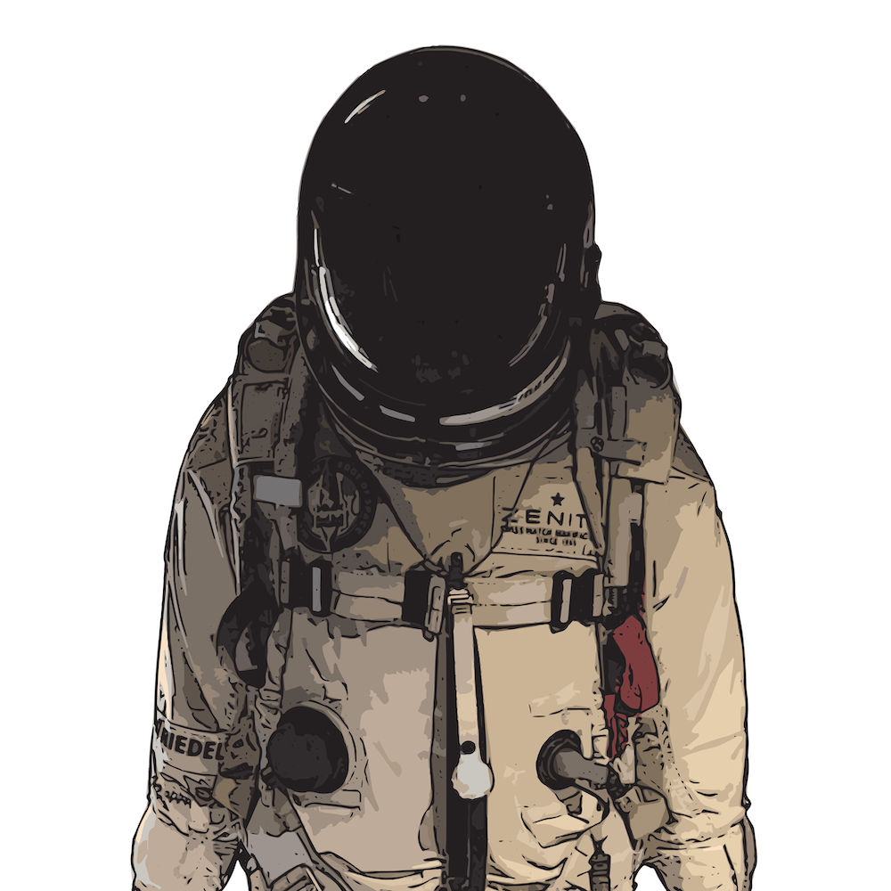
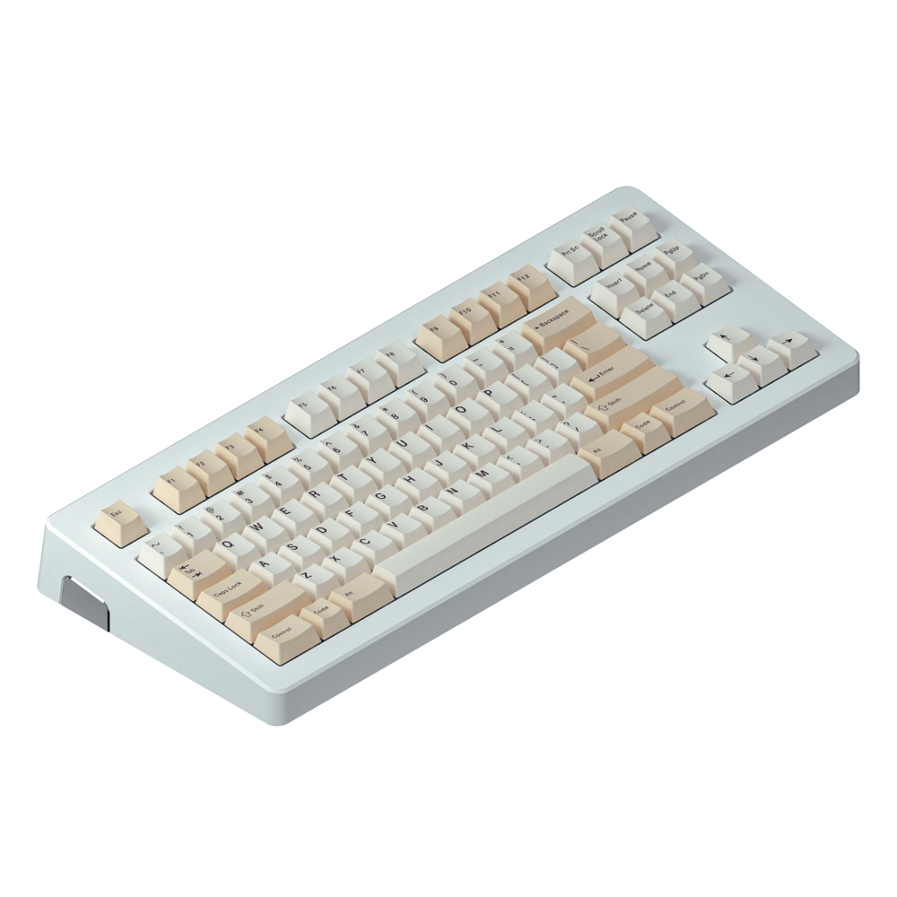
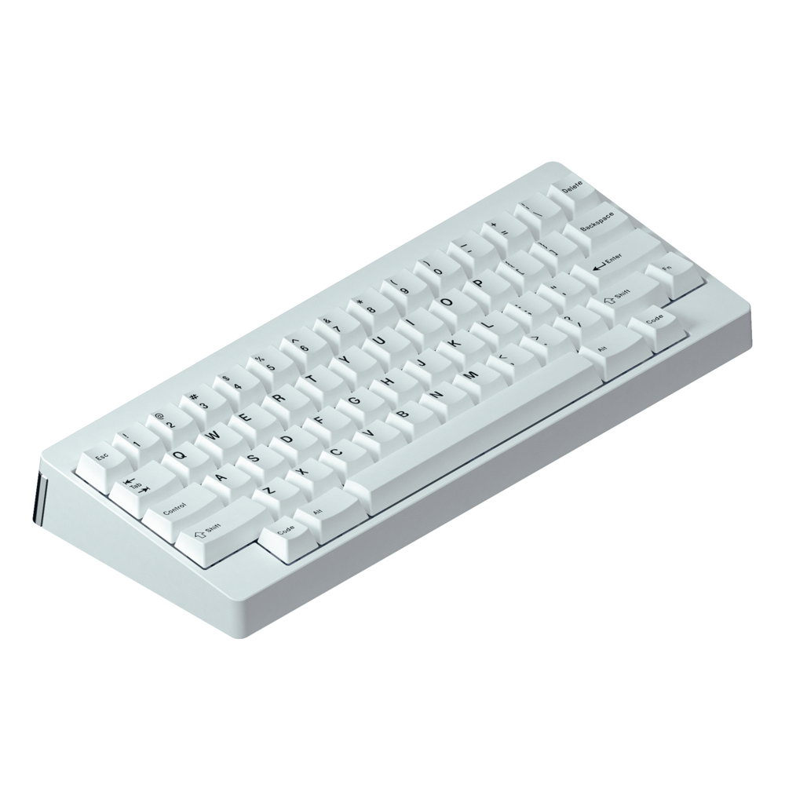
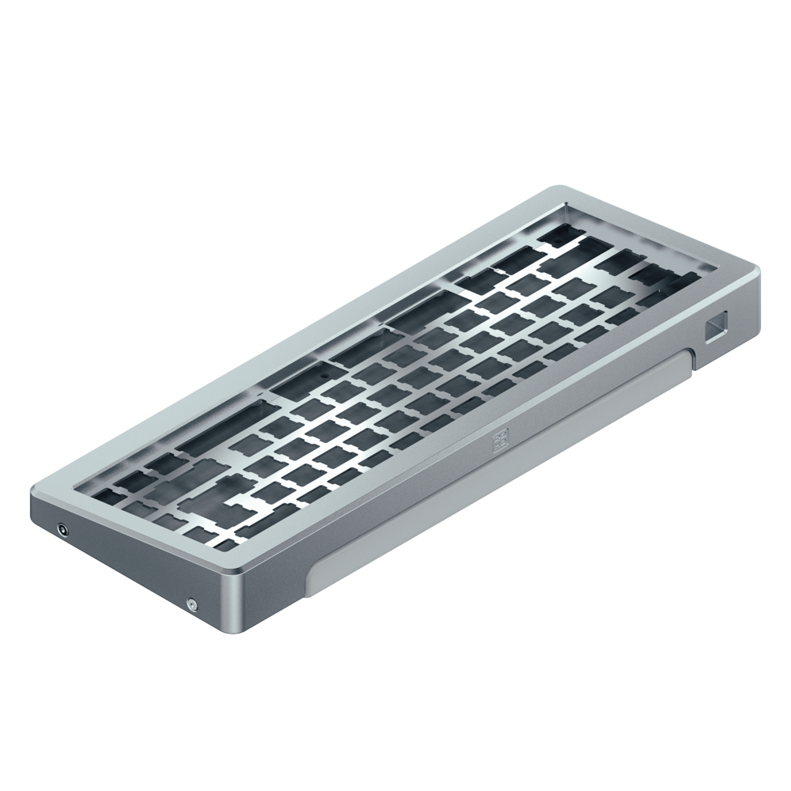
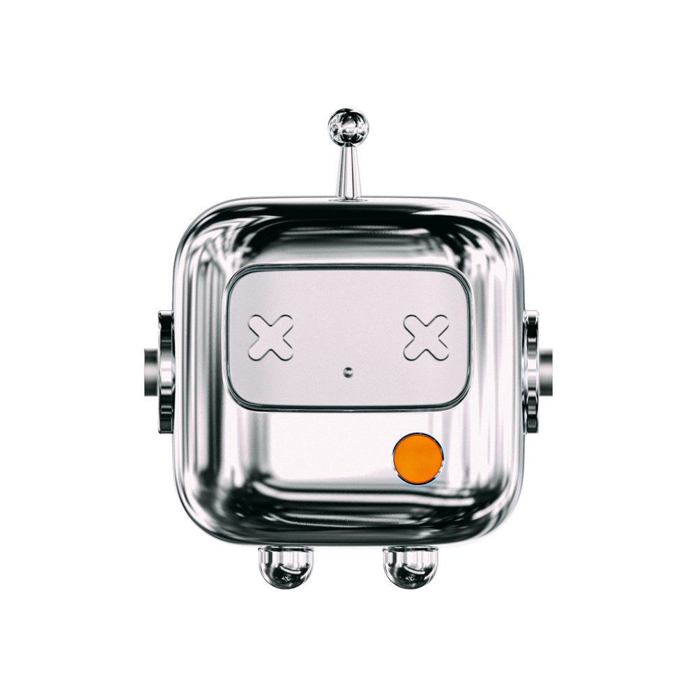

Systems Engineering
Rail systems testing, field integration, turnover readiness, stakeholder coordination

Hi, I'm @nautxx
17+ years building systems that last.
I build with a sharp eye for quality, usability, and aesthetics — across construction engineering, field systems, service operations, and software.
From major infrastructure projects to automation-backed businesses, I turn messy problems into working systems: inspection workflows, testing processes, SOPs, customer operations, custom builds, and tools built end-to-end.
At Codenauts, I turned repeatable problems into repeatable systems — cleaner workflows, documented processes, automation, and self-service support for customers and teams.
Build it well. Make it useful. Make it last.
This still feels like day one. Ready for what’s next.
17+ years building reliable systems across infrastructure → quality → field operations → automation → software, translating complex real-world work into clear processes, durable tools, and measurable outcomes.
Rail systems testing, field integration, turnover readiness, stakeholder coordination
QITPs, inspections, audits, compliance tracking, closeout documentation
LLM agents, tool use, HITL handoffs, voice, messaging, and automation loops
Design-build transportation projects, field QA/QC, reporting, owner acceptance
Turning ambiguous field work into clear procedures, logs, standards, and handoffs
Building tools from recurring pain points, improving usability, accuracy, and speed
Backend Developer & Quality Manager · Consultant to The Quality Firm
Through Codenauts, I support The Quality Firm across backend development, quality management, field documentation, and software-enabled operational workflows.
Built task-specific AI assistants for project planning, support workflows, QA review, writing, documentation cleanup, and repeatable operations.
Created AI-assisted marketing workflows for content drafts, brand messaging, customer support copy, social posts, campaign ideas, and reusable business prompts.
Built Python-backed workflows and backend utilities for PDF parsing, file renaming, report cleanup, data extraction, document control, and recurring quality operations.
Turned recurring field, QA, and documentation problems into repeatable processes, lightweight tools, clearer handoffs, and cleaner team workflows.
Systems Engineer
Supporting final systems delivery for a major rail program through testing, integration, verification, and closeout readiness.
Quality Engineer
Quality engineering and audit leadership for the $1.8B Metro Westside Purple Line Extension design-build program.
Web Development & Developer Operations
Supported a dive travel business through web development, site maintenance, and operations workflows for personalized trip planning and destination packages across Palau, the Philippines, and Japan.
Project Manager / Project Engineer
Managed quality operations, reporting, and closeout for public infrastructure and design-build programs across Southern California.
Administrator / Dispatch
Early foundation in field coordination, materials testing workflows, documentation control, and internal tooling.
Hermes-powered agents for Discord and Slack — not one bot, but a small operating layer of specialized assistants for support, community, project workflows, and server status.
Personal orchestrator + knowledge management
Discord support agent for server status, Plex issues, printer chaos, and quick family tech help.
Checks self-hosted services, uptime notes, Docker workflows, Caddy routes, and deployment reminders.
Slack marketing agent responsible for managing the company Instagram account, content ideas, captions, posting support, and brand consistency.
iPhone-first Tagalog learning app built with SwiftUI, JSON language packs, local audio, streak tracking, and fast game-style practice modes.
Retail operations concept for scanning shelves, baskets, displays, and store setups to turn visual conditions into structured review data.
QA review app for language-pack findings, tester review state, timestamped logs, exports, and AI cleanup prompts.
View code 0 0Self-hosted Docker, Caddy, uptime monitoring, dashboards, internal tools, and home-lab deployment patterns.
View code 0 0Static portfolio system with responsive sections, theme switching, privacy page, project cards, and resume-focused content.
View code 0 0



My daily workflow is an agentic build lab: Claude Code, MCPs, custom project instructions, reusable skills, and human-in-the-loop review for shipping real work faster.
Building with the Claude API
Anthropic
Advanced MCP Topics
Anthropic
Claude Code in Action
Anthropic
Introduction to Model Context Protocol
Anthropic
AI Fluency: Framework & Foundations
Anthropic
Teaching AI Fluency
Anthropic
AI Fluency for Educators
Anthropic
AI Fluency for Students
Anthropic